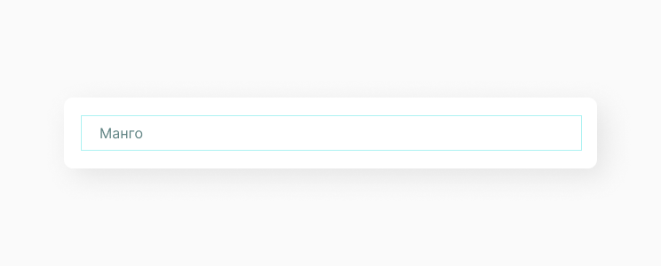
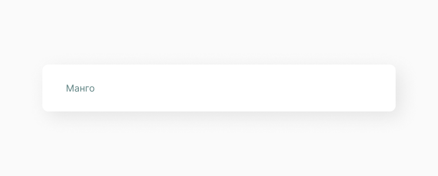
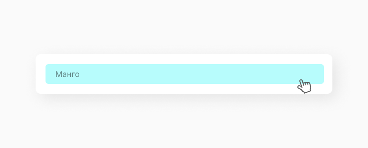
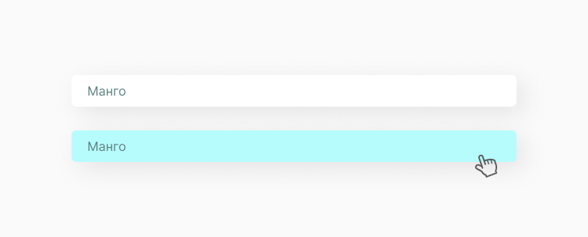

Option Item
HTML элемент <option> используется для определения пункта списка контейнера.
Структура компонента
Option Item является частью структуры option list, и может содержать в себе различные типы данных: иконку, текст, картинку, в зависимости от назначения option list. В данном примере рассматриваем стандартный option item с текстовой меткой. Обычно option item имеет собственные отступы и hover при наведении курсора. Все стили создаются в отдельном файле, чтобы придерживаться принципа проектирования компонента в изоляции.
Состояние компонента
Так как option item является малой функциональной частью структуры select, в которую входит option list как коллекция, мы выделяем только анимацию hover, при наведении на элемент списка.
 Реализация
Создаем папку с названием A_OptionItem.jsx. Стоит уточнить, что мы не используем тег <option>, вместо него создаем <div> с классом A_OptionItem и устанавливаем необходимые для реализации заявленной функциональности атрибуты.
import React, { PureComponent } from 'react'
import './A_OptionItem.scss'
export default class A_OptionItem extends PureComponent {
constructor(props) {
super(props)
}
render() {
const { id, value, onSelect } = this.props
return (
<div className="A_OptionItem" onClick={() => onSelect(id, value)}>
{value}
</div>
)
}
}Теперь задаем стили для option item.
.A_OptionItem {
padding: 11px 20px 10px;
font-family: 'Inter', Helvetica, Arial, sans-serif;
font-size: 20px;
color: #426060;
font-weight: 300;
border-radius: 6px;
}
.A_OptionItem:hover {
background-color: #5be7e7;
}Получаем следующий результат:
Ссылки
Также для тебя ссылки на Figma с дизайн системой и GitHub с библиотекой компонентов.
Составляющие
Этот компонент часто выводится в следующих компонентах